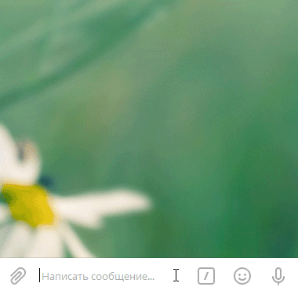
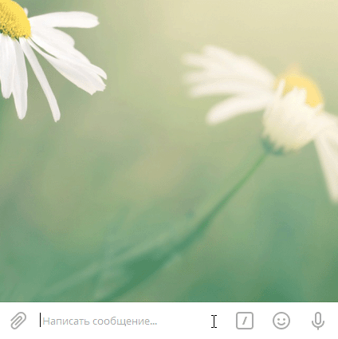
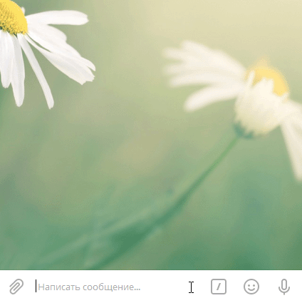
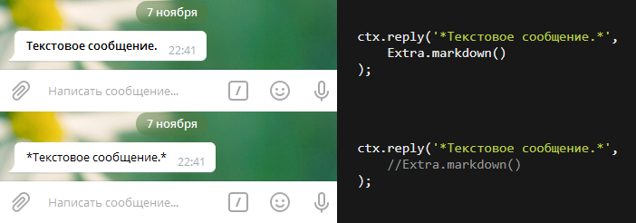

Вернуться
var Telegraf = require('telegraf');
var bot = new Telegraf(process.env.BOT_TOKEN);
// Простой текст
bot.hears('sample1', function(ctx) {
return ctx.reply('Простой текст!');
});
bot.launch();
var Telegraf = require('telegraf');
var bot = new Telegraf(process.env.BOT_TOKEN);
// Стилизованный текст
bot.hears('sample2', function(ctx) {
return ctx.replyWithHTML([
'<b>Жирный</b>',
'<i>Курсив</i>',
'<u>Подчеркнутый</u>',
'<s>Зачеркнутый</s>',
'<a href="http://www.example.com/">URL ссылка</a>',
'<a href="tg://user?id=123456789">Ссылка на пользователя в Телеграм</a>',
'<code>inline fixed-width code</code>',
'<pre>pre-formatted fixed-width code block</pre>'
].join('\n'));
});
bot.launch();
var Telegraf = require('telegraf');
var bot = new Telegraf(process.env.BOT_TOKEN);
// Пустое сообщение
bot.hears('sample3', function(ctx) {
return ctx.reply(String.fromCodePoint(4448));
});
bot.launch();
var Telegraf = require('telegraf');
var bot = new Telegraf(process.env.BOT_TOKEN);
// Изменить отправленное сообщение
bot.hears('sample4', function(ctx) {
return ctx.reply('Ответ на sample4!').then(function({ message_id }) {
// Изменяем сообщение "Ответ на sample4!"
setTimeout(function() {
ctx.telegram.editMessageText(
ctx.chat.id, message_id, message_id, 'Сообщение изменено!'
);
}, 1000 * 2);
});
});
bot.launch();
var Telegraf = require('telegraf');
var bot = new Telegraf(process.env.BOT_TOKEN);
// Удалить присланное сообщение
bot.hears('sample5', function(ctx) {
return ctx.reply('Ваше сообщение "sample5" удалено!').then(function() {
// Удаляем сообщение "sample5"
ctx.deleteMessage();
});
});
bot.launch();
var Telegraf = require('telegraf');
var bot = new Telegraf(process.env.BOT_TOKEN);
// Удалить присланное и отправленное сообщение
bot.hears('sample6', function(ctx) {
return ctx.reply('Ответ на sample6!').then(function({ message_id }) {
// Удаляем сообщение "sample6"
setTimeout(function() {
ctx.deleteMessage(ctx.message_id);
}, 1000 * 1);
// Удаляем сообщение "Ответ на sample6!"
setTimeout(function() {
ctx.deleteMessage(message_id);
}, 1000 * 2);
});
});
bot.launch();
var Telegraf = require('telegraf');
var Markup = require('telegraf/markup');
var bot = new Telegraf(process.env.BOT_TOKEN);
// Простая клавиатура
bot.hears('sample7', function(ctx) {
return ctx.reply('Пример простой клавиатуры!', Markup
.keyboard(['Кнопка #1', 'Кнопка #2'])
.extra()
);
});
bot.launch();
var Telegraf = require('telegraf');
var Markup = require('telegraf/markup');
var bot = new Telegraf(process.env.BOT_TOKEN);
// Горизонтальная клавиатура
bot.hears('sample8', function(ctx) {
return ctx.reply('Пример горизонтальной клавиатуры!', Markup
.keyboard([['Кнопка #1', 'Кнопка #2']])
.extra()
);
});
bot.launch();
var Telegraf = require('telegraf');
var Markup = require('telegraf/markup');
var bot = new Telegraf(process.env.BOT_TOKEN);
// Сжатая клавиатура
bot.hears('sample9', function(ctx) {
return ctx.reply('Пример сжатой клавиатуры!', Markup
.keyboard(['Кнопка #1', 'Кнопка #2'])
// По умолчанию кнопки расстягиваются на весь экран(на всю доступную область)
// Если добавить ".resize()", то кнопки будут сжаты до минимальных размеров
.resize()// Сжимаем кнопки
.extra()
);
});
bot.launch();
var Telegraf = require('telegraf');
var Markup = require('telegraf/markup');
var bot = new Telegraf(process.env.BOT_TOKEN);
// Скрыть клавиатуру после клика
bot.hears('sample10', function(ctx) {
return ctx.reply('Скрыть клавиатуру после клика!', Markup
.keyboard(['Кнопка #1', 'Кнопка #2'])
.oneTime()// Скрываем клавиатуру после клика
.extra()
);
});
bot.launch();

var Telegraf = require('telegraf');
var Markup = require('telegraf/markup');
var bot = new Telegraf(process.env.BOT_TOKEN);
// Управление рядами клавиатуры
bot.hears('sample11', function(ctx) {
return ctx.reply('Пример как можно управлять рядами клавиатуры!', Markup
.keyboard([
// Ряд 1
['Кнопка #1', 'Кнопка #2', 'Кнопка #3'],
// Ряд 2
['Кнопка #4'],
// Ряд 3
['Кнопка #5', 'Кнопка #6', 'Кнопка #7', 'Кнопка #8']
])
.extra()
);
});
bot.launch();
var Telegraf = require('telegraf');
var Extra = require('telegraf/extra');
var bot = new Telegraf(process.env.BOT_TOKEN);
// Простая встроенная клавиатура
bot.hears('sample12', function(ctx) {
return ctx.reply('Пример встроенной клавиатуры!', Extra.markup(function(m) {
return m.inlineKeyboard([
m.callbackButton('Кнопка #1', 'butt_1'),
m.callbackButton('Кнопка #2', 'butt_2'),
m.callbackButton('Кнопка #3', 'butt_3')
]);
}));
});
// Слушатель "Кнопка #1"
bot.action('butt_1', function(ctx) {
console.log('Клик по "Кнопка #1"!');
ctx.answerCbQuery();
});
// Слушатель "Кнопка #2"
bot.action('butt_2', function(ctx) {
console.log('Клик по "Кнопка #2"!');
ctx.answerCbQuery();
});
// Слушатель "Кнопка #3"
bot.action('butt_3', function(ctx) {
console.log('Клик по "Кнопка #3"!');
ctx.answerCbQuery();
});
bot.launch();
var Telegraf = require('telegraf');
var Extra = require('telegraf/extra');
var bot = new Telegraf(process.env.BOT_TOKEN);
// Всплывающее уведомление без подтверждения
bot.hears('sample13', function(ctx) {
return ctx.reply('Нажмите пожалуйста на кнопку ниже.', Extra.markup(function(m) {
return m.inlineKeyboard([
m.callbackButton('Получить уведомление', 'butt_1')
]);
}));
});
bot.action('butt_1', function(ctx) {
return ctx.answerCbQuery('Уведомление без подтверждения!');
});
bot.launch();

var Telegraf = require('telegraf');
var Extra = require('telegraf/extra');
var bot = new Telegraf(process.env.BOT_TOKEN);
// Всплывающее уведомление с подтверждением
bot.hears('sample14', function(ctx) {
return ctx.reply('Нажмите пожалуйста на кнопку ниже.', Extra.markup(function(m) {
return m.inlineKeyboard([
m.callbackButton('Получить уведомление', 'butt_1')
]);
}));
});
bot.action('butt_1', function(ctx) {
var msg = 'Уведомление с подтверждением!\nНажмите ОК чтобы закрыть это окно.';
return ctx.answerCbQuery(msg, true);
});
bot.launch();


var Telegraf = require('telegraf');
var bot = new Telegraf(process.env.BOT_TOKEN);
// Слушатель команды "/start"
bot.start(function(ctx) {
ctx.reply('Вы отправили команду "/start"!');
});
// Слушатель команды "/help"
bot.help(function(ctx) {
ctx.reply('Вы отправили команду "/help"!');
});
// Слушатель команды "/settings"
bot.settings(function(ctx) {
ctx.reply('Вы отправили команду "/settings"!');
});
// Слушатель команды "/test"
bot.command('test', function(ctx) {
ctx.reply('Вы отправили команду "/test"!');
});
// Слушатель произвольной команды
bot.on('text', function(ctx, next) {
if (ctx.message.text[0] !== '/') {
return next();
}
ctx.reply(`Вы отправили команду "${ctx.match[0]}"!`);
});
// Слушатель строки "test"
bot.hears('test', function(ctx) {
ctx.reply('Вы отправили строку "test"!');
});
// Слушатель любого текста
bot.on('text', function(ctx) {
ctx.reply('Вы отправили текст "'+ ctx.update.message.text +'"!');
});
// Слушатель любого стикера
bot.on('sticker', function(ctx) {
ctx.replyWithHTML(
''+ JSON.stringify(ctx.update.message.sticker, null, ' ') +''
);
});
bot.launch();
const Telegraf = require('telegraf');
const Extra = require('telegraf/extra');
const Markup = require('telegraf/markup');
const bot = new Telegraf(process.env.BOT_TOKEN);
// Выводит все сообщения в консоль
//bot.use(Telegraf.log());
bot.command('onetime', ({ reply }) =>
reply('One time keyboard', Markup
.keyboard(['/simple', '/inline', '/pyramid'])
.oneTime()
.resize()
.extra()
)
)
bot.command('custom', ({ reply }) => {
return reply('Custom buttons keyboard', Markup
.keyboard([
['🔍 Search', '😎 Popular'], // Row1 with 2 buttons
['☸ Setting', '📞 Feedback'], // Row2 with 2 buttons
['📢 Ads', '⭐️ Rate us', '👥 Share'] // Row3 with 3 buttons
])
.oneTime()
.resize()
.extra()
)
})
bot.hears('🔍 Search', ctx => ctx.reply('Yay!'))
bot.hears('📢 Ads', ctx => ctx.reply('Free hugs. Call now!'))
bot.command('special', (ctx) => {
return ctx.reply('Special buttons keyboard', Extra.markup((markup) => {
return markup.resize()
.keyboard([
markup.contactRequestButton('Send contact'),
markup.locationRequestButton('Send location')
])
}))
})
bot.command('pyramid', (ctx) => {
return ctx.reply('Keyboard wrap', Extra.markup(
Markup.keyboard(['one', 'two', 'three', 'four', 'five', 'six'], {
wrap: (btn, index, currentRow) => currentRow.length >= (index + 1) / 2
})
))
})
bot.command('simple', (ctx) => {
return ctx.replyWithHTML('Coke or Pepsi?', Extra.markup(
Markup.keyboard(['Coke', 'Pepsi'])
))
})
bot.command('inline', (ctx) => {
return ctx.reply('Coke or Pepsi?', Extra.HTML().markup((m) =>
m.inlineKeyboard([
m.callbackButton('Coke0', '666'),
m.callbackButton('Pepsi0', 'Pepsi1')
])))
})
bot.command('random', (ctx) => {
return ctx.reply('random example',
Markup.inlineKeyboard([
Markup.callbackButton('Coke', 'Coke'),
Markup.callbackButton('Dr Pepper', 'Dr Pepper', Math.random() > 0.5),
Markup.callbackButton('Pepsi', 'Pepsi')
]).extra()
)
})
bot.command('caption', (ctx) => {
return ctx.replyWithPhoto({ url: 'https://picsum.photos/200/300/?random' },
Extra.load({ caption: 'Caption' })
.markdown()
.markup((m) =>
m.inlineKeyboard([
m.callbackButton('Plain', 'plain'),
m.callbackButton('Italic', 'italic')
])
)
)
})
bot.hears(/\/wrap (\d+)/, (ctx) => {
return ctx.reply('Keyboard wrap', Extra.markup(
Markup.keyboard(['one', 'two', 'three', 'four', 'five', 'six'], {
columns: parseInt(ctx.match[1])
})
))
})
bot.action('Dr Pepper', (ctx, next) => {
return ctx.reply('👍').then(() => next())
})
/*
bot.action('plain', async (ctx) => {
await ctx.answerCbQuery()
await ctx.editMessageCaption('Caption', Markup.inlineKeyboard([
Markup.callbackButton('Plain', 'plain'),
Markup.callbackButton('Italic', 'italic')
]))
})
*/
bot.action('italic', async (ctx) => {
await ctx.answerCbQuery()
await ctx.editMessageCaption('_Caption_', Extra.markdown().markup(Markup.inlineKeyboard([
Markup.callbackButton('Plain', 'plain'),
Markup.callbackButton('* Italic *', 'italic')
])))
})
bot.action('666', (ctx) => {
return ctx.answerCbQuery('6667!')
})
bot.action(/.+/, (ctx) => {
return ctx.answerCbQuery(`Oh, ${ctx.match[0]}! Great choice555`)
})
bot.launch();
//--------------------------------------------------------------------------------------------------
var Extra = require('telegraf/extra');
/*--------------------------------------------------------------------------------------------------
|
| -> Конструктор
|
|-------------------------------------------------------------------------------------------------*/
$.Telegram = function(ctx, user_id) {
Object.defineProperty(this, '_user_id', {value: user_id});
Object.defineProperty(this, '_ctx', {value: ctx});
};
//--------------------------------------------------------------------------------------------------
$.Telegram.prototype = {
/*--------------------------------------------------------------------------------------------------
|
| -> Переменные
|
|-------------------------------------------------------------------------------------------------*/
intervalQuery: 1000,// Задержка между запросами не чаще чем раз в 1 секунду.
nextTimeQuery: 0,// Время следующего запроса
count: 0,// Колиество задач в очереди
/*--------------------------------------------------------------------------------------------------
|
| -> Очередь запросов
|
|-------------------------------------------------------------------------------------------------*/
// Выполняет код с задержкой
delay: function(ms) {
return new Promise(function(resolve) {
setTimeout(resolve, ms);
});
},
// Добавляет в очередь
_next: function(args) {
// Текущее время
var timeNow = new Date()-0;
// Высчитываем когда выполнить запрос
var interval = this.nextTimeQuery - timeNow;
// Если прошло больше секунды с предыдущего запроса
// то выполняем новый запрос без задержки
interval = interval < 0 ? 0 : interval;
// Сохраняем время для следующего запроса
this.nextTimeQuery = this.intervalQuery + timeNow + interval;
// Ставим запрос в очередь
return this.delay(interval).then(() => {
return this['_'+args.callee.name].apply(this, args);
});
},
/*--------------------------------------------------------------------------------------------------
|
| -> Технические методы
|
|-------------------------------------------------------------------------------------------------*/
isText: function(text) {
// Текст не задан
if (typeof text != 'string' || text == '') {
// Задаем текст который отправил пользователь
text = this.text;
}
// Обрезает текст до 4096 символов
// Это необходимо так как Telegram не будет принимать сообщения привышающие 4096 символов
text = text.substring(0, 4096);// Первые 4096 символов
//text = text.substring(text.length - 4096, text.length);// Последние 4096 символов
// Возвращаем обновленный текст
return text;
},
/*--------------------------------------------------------------------------------------------------
|
| -> Свойства
|
|-------------------------------------------------------------------------------------------------*/
// Возвращает текст сообщения
get text() {
return this._ctx.message['text'];
},
// Возвращает регулярные выражения
get match() {
return this._ctx.match;
},
/*--------------------------------------------------------------------------------------------------
|
| -> Отправляет ответ на запрос пришедший от встроенной клавиатуры
|
|-------------------------------------------------------------------------------------------------*/
// Отправляет ответ без всплывающего уведомления
// это нужно для того чтобы убрать режим ожидания на нажатой кнопке,
// то есть продемонстрировать пользователю, что операция завершена
complete: function() {return this._next(arguments)}, _complete: function() {
return this._ctx.answerCbQuery();
},
// Отправляет ответ в виде всплывающего уведомления без подтверждения
notification: function() {return this._next(arguments)}, _notification: function(text) {
return this._ctx.answerCbQuery(this.isText(text), false);
},
// Отправляет ответ в виде всплывающего уведомления с подтверждением
alert: function() {return this._next(arguments)}, _alert: function(text) {
return this._ctx.answerCbQuery(this.isText(text), true);
},
/*--------------------------------------------------------------------------------------------------
|
| -> Работа с сообщениями
|
|-------------------------------------------------------------------------------------------------*/
// Удаляет сообщение
_remove: function() {return this._next(arguments)}, remove: function(message_id) {
return this._ctx.deleteMessage(message_id);
},
// Отправляет сообщение
send: function() {return this._next(arguments)}, _send: function(text, keyboard) {
// Сообщение с клавиатурой
if (keyboard) {
return this._ctx.reply(this.isText(text), Extra.markup(function(m) {
var buttons = [];
for (var i = 0; i < keyboard.length; i++) {
buttons.push(m.callbackButton(keyboard[i][0], keyboard[i][1]));
}
return m.inlineKeyboard(buttons);
}));
}
// Сообщение без клавиатуры
return this._ctx.reply(this.isText(text));
},
// Редактирует сообщение
edit: function() {return this._next(arguments)}, edit: function(message_id, text, keyboard) {
// Сообщение с клавиатурой
if (keyboard) {
return this._ctx.telegram.editMessageText(
// ID пользователя
this._user_id,
// ID сообщения
message_id,
// ID клавиатуры
0,
// Текст сообщения
this.isText(text),
// Клавиатура
Extra.markup(function(m) {
var buttons = [];
for (var i = 0; i < keyboard.length; i++) {
buttons.push(m.callbackButton(keyboard[i][0], keyboard[i][1]));
}
return m.inlineKeyboard(buttons);
})
);
}
// Сообщение без клавиатуры
return this._ctx.telegram.editMessageText(
this._user_id,// ID пользователя
message_id,// ID сообщения
0,// ID клавиатуры
this.isText(text)// Текст сообщения
);
}
};
//--------------------------------------------------------------------------------------------------
var full = new Date();
var getTime = function() {
console.log(new Date() - full);
};
const QUERY_INTERVAL = 1000;// Задержка между запросами не чаще чем раз в 1 секунду.
const sleep = function(ms, val) {
return new Promise(r => setTimeout(() => r(val), ms));
};
const noop = function(v) {
return v;
};
const queuePromise = () => {
let promise = Promise.resolve();
return async cb => {
const _promise = promise;
return promise = Promise.resolve((async () => {
await _promise.then(noop, noop);
return cb();
})())
}
}
const proxyAllMethod = function(obj, interval) {
const qp = queuePromise();
return new Proxy(obj, {
get(tar, prop) {
if (typeof tar[prop] !== 'function') {
return tar[prop];
}
return async (...args) => qp(async () => {
await sleep(interval);
return tar[prop](...args);
});
}
});
};
class F {
constructor() {
return proxyAllMethod(this, QUERY_INTERVAL);
}
send(...args) {
getTime();
console.log(args);
console.log('----------');
return;
}
edit(...args) {
getTime();
console.log(args);
console.log('----------');
return;
}
remove(...args) {
getTime();
console.log(args);
console.log('----------');
return;
}
notification(...args) {
getTime();
console.log(args);
console.log('----------');
return;
}
}
var f = new F();
setTimeout(function() {
/*
(async() => {
f.send('Hi');
})();
*/
f.send(1)
.then(function() {
f.edit(2);
})
.then(function() {
f.remove(3);
})
.then(function() {
f.notification(4);
});
}, 2000);